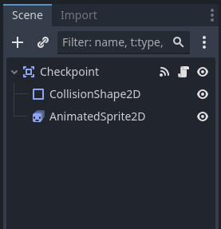
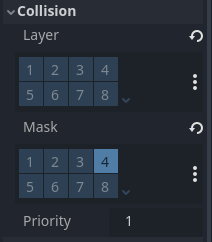
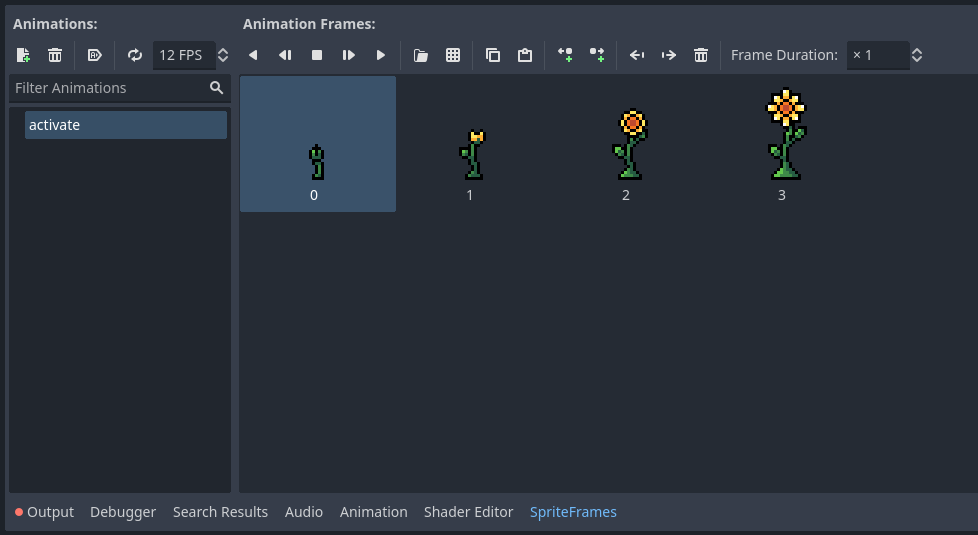
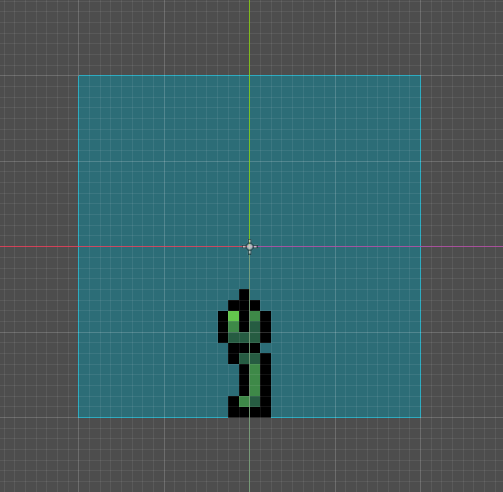
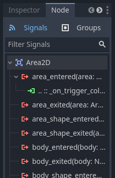

IMPORTANT! This module requires the Trigger Setup and Hazard Setup modules to be completed first!
Checkpoints are points in a level where the player can effectively save their progress, allowing them to return to the checkpoint if they fail instead of restarting the whole level! Adding checkpoints can allow you to make longer and more challenging levels while also lessening how "unfair" the game feels. On this page we will create a checkpoint that activates when the player touches it, allowing them to respawn and playing a short animation.
First things first, we need to create a new scene. Choose an Area2D node as the root node and rename it to Checkpoint. Next, right click the Checkpoint node and add a CollisionShape2D node and an AnimatedSprite2D node as children. The scene tree should now look like this:
The two symbols next to the Checkpoint node show an attached script and a connected signal. They will show up as we move through this module.
Select the checkpoint module. Go to the inspector and under collisions set the physics layers to be empty and the physics masks to our trigger layer, like so:
Next select the AnimatedSprite2D node. In the inspector create a new sprite frames. Import the Checkpoint sprite from the Checkpoints folder in your VGDC-2024 Assets folder.
If you are not taking this course in person, you can download the assets Here
Lets's rename the animation to activate. We don't want it to auto play nor loop, let's set the animation speed to 12.
Next select the CollisionShape2D node. In the inspector create a new rectangle collision shape. We want the new shape to be around twice as large as a tile (you can change the animation frame to the last one in the inspector if you want to see the full size of the flower to set the collision shape.)
Of course we still don't have any functionality yet. Let's add a new script to the Checkpoint node. We need to connect the CollisionShape2D node to the script. Select it then go to the node tab in the inspector. Select the area_entered signal and connect it to the script.
In the checkpoint script itself we need to first add a new variable: active. This variable will store whether or not the checkpoint has been activated, in order to prevent it from playing it's activate animation each time the player touches it. Let's start it off as false.
var active = falseFinally, within the on_area_entered function we need to set the player's respawn point, play the activate animation if the checkpoint isn't already active, then set the active variable to true. One such function looks like this:
func _on_area_entered(area):
area.get_parent().respawn_point = global_position
if not active:
$AnimatedSprite2D.play("activate")
Global.score += 1500
active = trueNote that we are getting the parent of the area the checkpoint collided with. This is because we need to access the player scene's trigger collider's parent node, aka the player node.
And you are done! Go ahead and add some checkpoints into your world and try them out, then move on to another module!